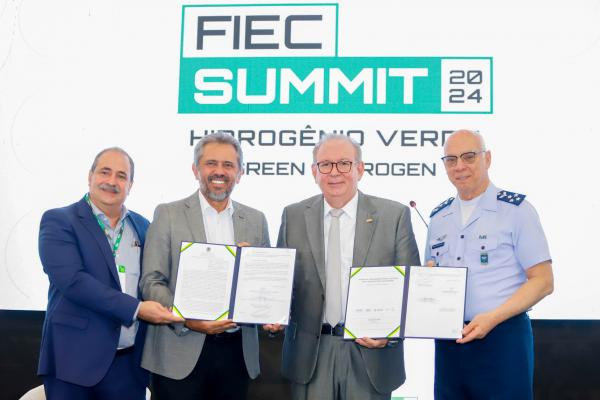
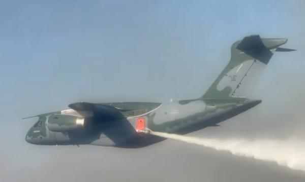

Este blog incluira noticias exclusivamente relacionadas a aeronautica brasileira. Aqui encontrara as ultimas noticias, reportagens e acontecimentos relcionados a aeronautica. Afirmo meu compromisso com o usuario para trazer somente conteudos de sites confiaveis *Notícias que forem considerada de grande relevância mesmo que fujam do da área descrevida, serão enviadas
Publicado em 20/08/2024 10:25
Em um passo significativo para o fortalecimento da inovação tecnológica na indústria do Ceará, o Comando da Aeronáutica (COMAER) oficializou, no dia 12/08, durante a cerimônia de abertura do FIEC Summit 2024, a assinatura do Termo de Cessão de Uso que permitirá a implantação de um Parque Tecnológico na Base Aérea de Fortaleza (BAFZ). No dia 13/08, o Tenente-Brigadeiro do Ar Walcyr participou como palestrante de um painel no FIEC Summit 2024, focado em capacitação e Pesquisa, Desenvolvimento e Inovação (PD&I). Durante sua apresentação, o Chefe de Operações Conjuntas do Ministério da Defesa detalhou o planejamento do campus do Instituto Tecnológico de Aeronáutica (ITA) no Ceará. Ele destacou ainda que a colaboração entre governo, academia e setor privado, conhecida como tríplice hélice, é fundamental para a viabilização de grandes projetos em benefício da sociedade, como o ITA Ceará. Clique na imagem abaixo para mais informações
Publicado em 19/08/2024 17:05
A Força Aérea Brasileira (FAB) tem atuado, sob a coordenação do Comando Conjunto da Operação Pantanal II, no combate aos incêndios no bioma sul-mato-grossense desde o dia 28/06. Nesta segunda-feira (19/08), o KC-390 Millennium alcançou a marca significativa de mais de 1 milhão de litros de água lançados na região do bioma. Nesta missão, o KC-390 Millennium, operado pelo Primeiro Grupo de Transporte de Tropa (1º GTT) – Esquadrão Zeus – sediado na Base Aérea de Anápolis (BAAN), foi equipado pela primeira vez com o Sistema Modular Aerotransportável de Combate a Incêndios (MAFFS, do inglês Modular Airborne Fire Fighting System), contribuindo de maneira decisiva na contenção das chamas. O sistema é composto por um tubo que projeta água pela porta traseira esquerda da aeronave, capaz de descarregar até 12 mil litros em apenas 7 segundos sobre áreas afetadas pelo fogo. O Sistema Modular Aerotransportável de Combate a Incêndios pesa cerca de seis toneladas sem água e a instalação no KC-390 Millennium demanda entre seis e oito horas de trabalho. A preparação da aeronave envolve uma equipe especializada, composta por militares das áreas de Elétrica e Mecânica. uando uma missão de combate a incêndios é acionada, como ocorreu no Pantanal, o MAFFS do KC-390 Millennium é abastecido com água proveniente de duas piscinas instaladas próximas à aeronave, cada uma com capacidade para 24 mil litros. Além da água, o sistema utiliza ar comprimido para pressurizar o líquido durante o lançamento sobre os focos de incêndio. Todo o processo de abastecimento leva, em média, 30 minutos, permitindo uma rápida decolagem para continuar o combate às chamas. Clique na imagem abaixo para mais informações
Publicada em 17/08/2024
Apesar deste blog ter foco em noticias da FAB, é relevante apresentar está notícia pois comoveu toda nação brasileira. No início desta manhâ recebemos o comunicado da morte aos 93 anos do aprresentador de TV 'Silvio Santos' em decorrência de uma broncopneumonia Silvio Santos foi um pioneiro no entretenimento da televisão brasileira sendo dono de vairas marcas conhecidas como Jequiti e SBT. Sua programação de tv foi responssavel por apresentar grandes obras para os brasileiros. Graças ao SBT nós podemos assistir da obra 'Chaves'. Clique na imagem abaixo para mais informações
Davi é um profissional na área de desenvolvimento de software, com interesse em aeronautica. Neste blog, compartilha suas ideias e experiências sobre diversos tópicos.
Nome: Marcos Silva
Comentário: é uma fonte excelente para quem deseja acompanhar as novidades e os avanços da aeronáutica brasileira. Com análises detalhadas e notícias atualizadas, é uma parada obrigatória para entusiastas e profissionais da área.
Nome: Ana Fernandes
Comentário: O blog é uma referência indispensável para quem quer entender mais sobre a evolução da aviação no Brasil. As matérias são sempre bem elaboradas e repletas de informações valiosas.7
Nome: Carlos Nogueira
Comentário: Este blog é meu ponto de partida para qualquer assunto relacionado à aviação brasileira. A qualidade das análises e a profundidade das matérias são impressionantes.